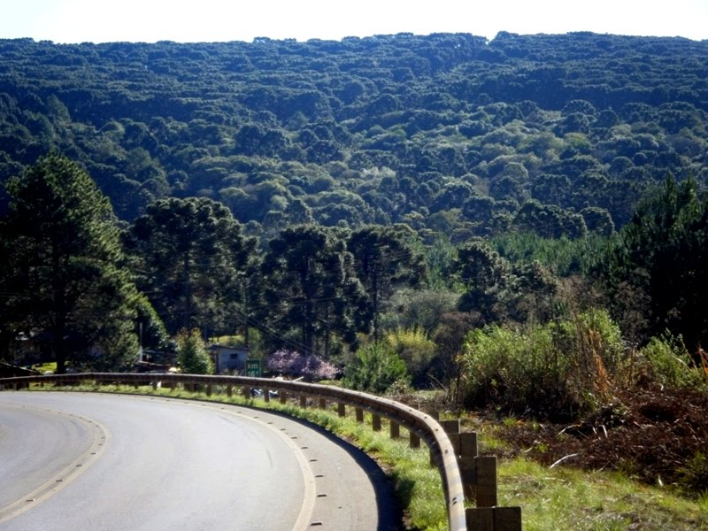

Em este site vamos conhecer algumas florestas nacionais do Brasil

Floresta Nacional de Caxiuanã
Floresta Nacional de Caxiuanã
A Floresta Nacional de Caxiuanã é uma unidade de conservação federal do Brasil
criada em 28 de novembro de 1961 por meio do Decreto nº 239. É a Floresta Nacional
(FLONA) mais antiga da Amazônia Legal e a 2ª mais antiga do Brasil. É administrada
pelo Instituto Chico Mendes de Conservação da Biodiversidade (ICMBio).
A floresta nacional de Caçador é uma unidade de conservação brasileira de uso sustentável
da natureza localizada no km 26 da rodovia SC 451, distrito municipal de Taquara Verde,
em Caçador, Santa Catarina.
Floresta Nacional do Tapajós é uma unidade de conservação (UC) federal brasileira,
localizada no estado do Pará. Tem área de 549.066,87 hectares e mais de 160
quilômetros de praias fluviais. A unidade apresenta grande diversidade de paisagens:
rios, lagos, alagados, terra firme, morros, planaltos, floresta, campos e açaizais.
É a UC que abriga a maior quantidade de pesquisas científicas no país
é uma floresta latifoliada úmida que cobre a maior parte da Bacia Amazônica da América
do Sul. Esta bacia abrange 7 milhões de quilômetros quadrados, dos quais 5 milhões e
meio de quilômetros quadrados são cobertos pela floresta tropical.
Esta região inclui territórios pertencentes a nove nações. A maioria das florestas
está contida dentro do Brasil, com 60% da floresta, seguida pelo Peru com 13% e com
partes menores na Colômbia, Venezuela, Equador, Bolívia, Guiana, Suriname e França
(Guiana Francesa). Estados ou departamentos de quatro nações vizinhas do Brasil têm
o nome de Amazonas por isso. A Amazônia representa mais da metade das florestas tropicais
remanescentes no planeta e compreende a maior biodiversidade em uma floresta tropical
no mundo. É um dos seis grandes biomas brasileiros.